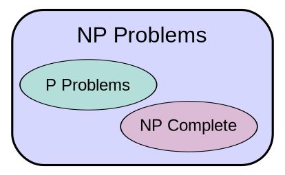
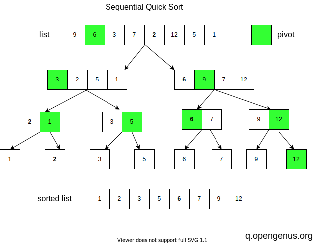
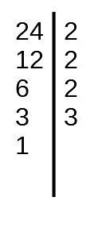
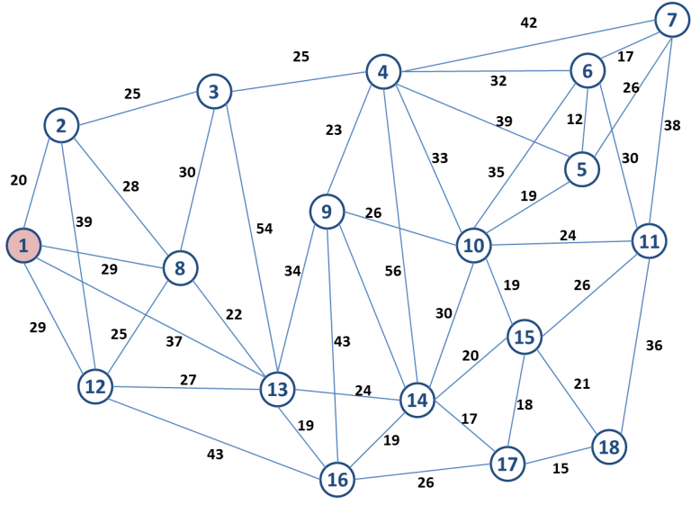

-
O que é a Complexidade de Problemas?
A complexidade de problemas aborda a dificuldade computacional em resolver categorias específicas de problemas. Avaliamos o tempo e recursos necessários para encontrar soluções eficientes.
Definições Importantes:
Problemas de complexidade é a dificuldade de um algoritmo Problemas de complexidade são classificadas em P, NP e NP-completos
Tempo polinomial: refere-se ao desempenho de um algoritmo em relação ao tamanho da entrada. Um algoritmo é considerado de tempo polinomial se o tempo de execução for limitado por um polinômio do tamanho da entrada.
-> P (Polinomial): Eficientemente resolvido em tempo polinomial.
-> NP (Não-Determinístico Polinomial): Soluções verificáveis em tempo polinomial, mas resolvê-los pode ser difícil.
-> NP-Completo: Os mais difíceis em NP; se resolvido eficientemente, todos os NP podem ser resolvidos. -
Explicando
Problemas P (Polinomial) são aqueles para os quais existe um algoritmo eficiente capaz de resolver o problema em tempo polinomial em relação ao tamanho da entrada. Em termos simples, o tempo de execução do algoritmo é limitado por uma função polinomial.
Problemas NP (Não-Determinístico Polinomial) são aqueles para os quais, se uma solução candidata é fornecida, é possível verificar em tempo polinomial se ela é correta. No entanto, encontrar essa solução inicial pode não ser eficiente.
Problemas NP-Completo são uma classe especial de problemas NP. Se um problema NP-Completo tiver uma solução eficiente (tempo polinomial), então todos os problemas em NP também têm soluções eficientes. Em outras palavras, os problemas NP-Completo são, de certa forma, os mais difíceis dentro da classe NP. Se um problema NP-Completo puder ser resolvido em tempo polinomial, então todos os problemas NP podem. O exemplo clássico de um problema NP-Completo é o problema do caixeiro-viajante.
 -
Exemplo classe P
Um exemplo clássico de problema P é a ordenação de uma lista de elementos. Algoritmos eficientes, como o Quicksort podem ordenar uma lista em tempo polinomial.
A principal ideia por trás do Quicksort é a estratégia de dividir para conquistar, que é implementada da seguinte forma:
- 1- Escolha do Pivô: Seleciona-se um elemento da lista a ser ordenada, chamado de pivô. A escolha do pivô pode afetar o desempenho do algoritmo, mas uma abordagem comum é escolher o elemento do meio da lista
- 2- Partição: Reorganiza a lista de modo que todos os elementos menores que o pivô fiquem à esquerda, e os elementos maiores fiquem à direita. Isso é feito em tempo linear.
- 3- Recursão: Aplica-se o Quicksort recursivamente às sub-listas à esquerda e à direita do pivô.
A complexidade de tempo do Quicksort é O(n * log(n)) em média, onde n é o número de elementos a serem ordenados.
 -
Exemplo classe NP
Um exemplo de problema NP é a fatoração de números. Nesse problema, dado um número grande deve-se encontrar seus fatores primos, pode ser complexo, mas verificar se uma dada fatoração é correta é fácil e pode ser feito em tempo polinomial.
Os fatores primos são números primos que multiplicados entre si resultam no número original. Esse conceito é fundamental na teoria dos números e é utilizado em várias áreas da matemática e ciências aplicadas.
O processo de fatoração envolve encontrar todos os divisores primos de um número e expressá-lo como o produto desses fatores. Por exemplo, a fatoração do número 24 é: 2 x 2 x 2 x 3, onde 2 e 3 são fatores primos.
 -
Exemplo classe NP-completo
O problema do Caixeiro-Viajante é um exemplo clássico de NP-completo.
Nesse problema, dada uma lista de cidades n e as distâncias entre elas, deve-se encontrar o caminho mais curto que visita cada uma das cidades uma vez e retorne à cidade de origem, ou seja, uma permutação dos números de 1 a n que minimize a soma das distâncias entre as cidades consecutivas na permutação.Não se conhece um algoritmo eficiente para resolvê-lo, e o desafio é encontrar uma solução em tempo polinomial para a dinâmica.
